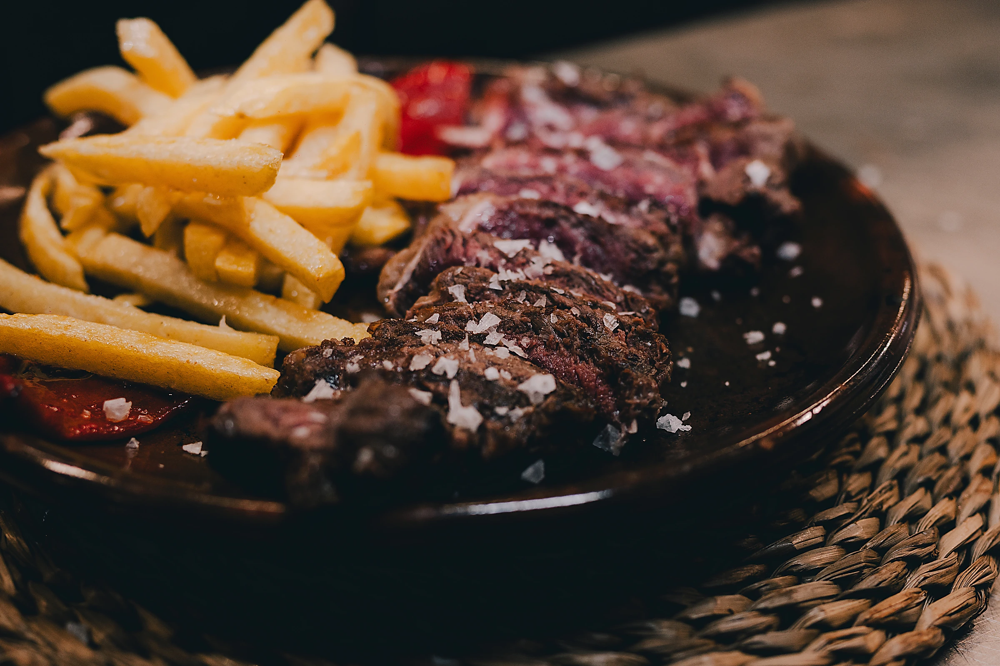
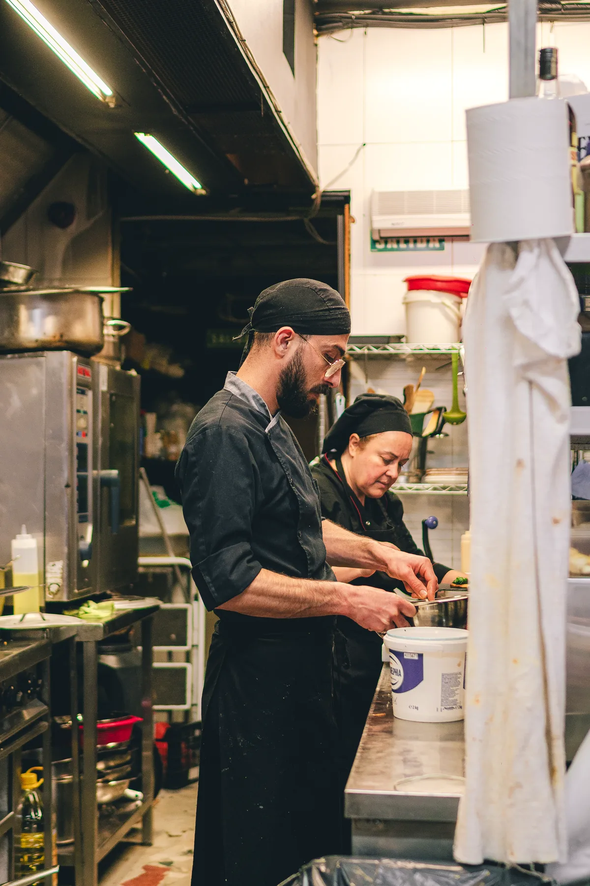
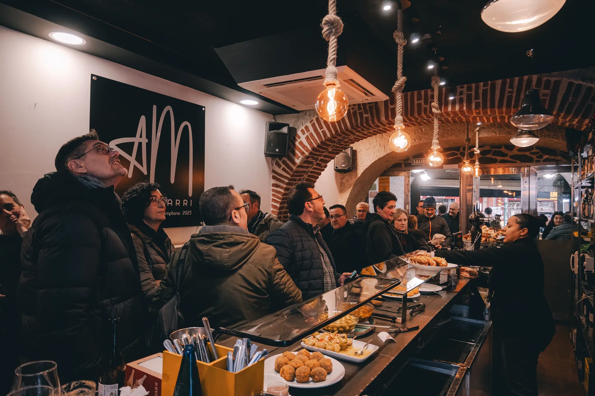
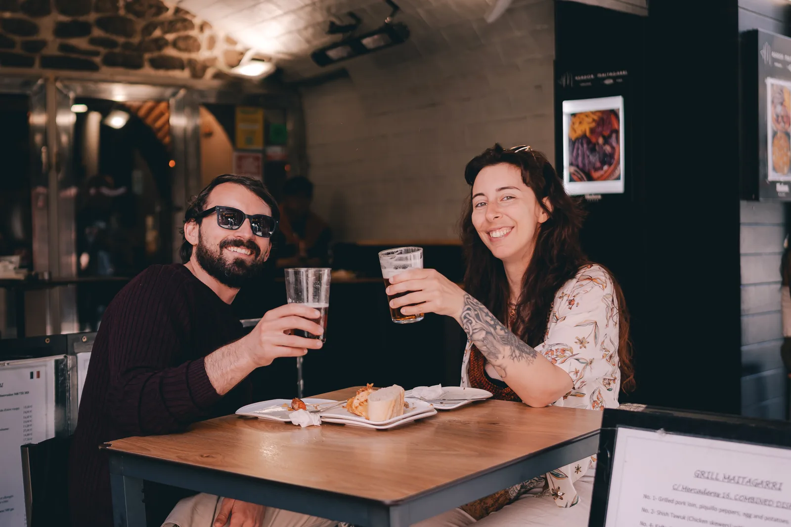
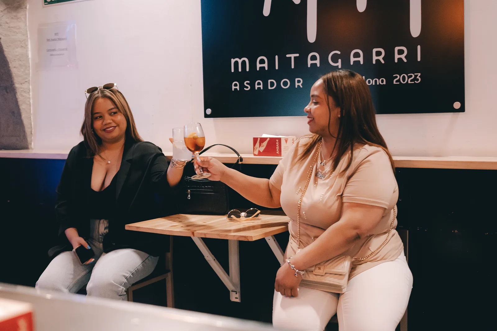
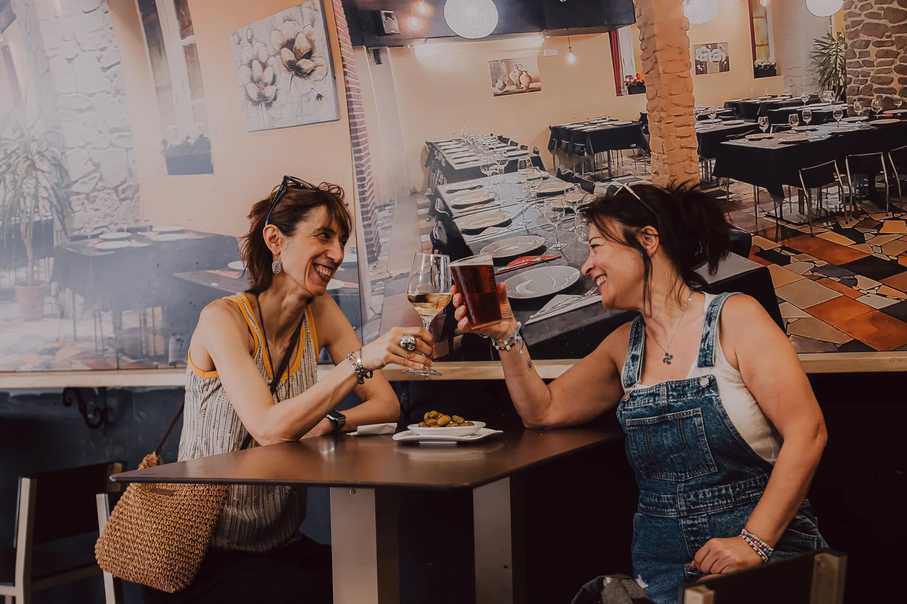
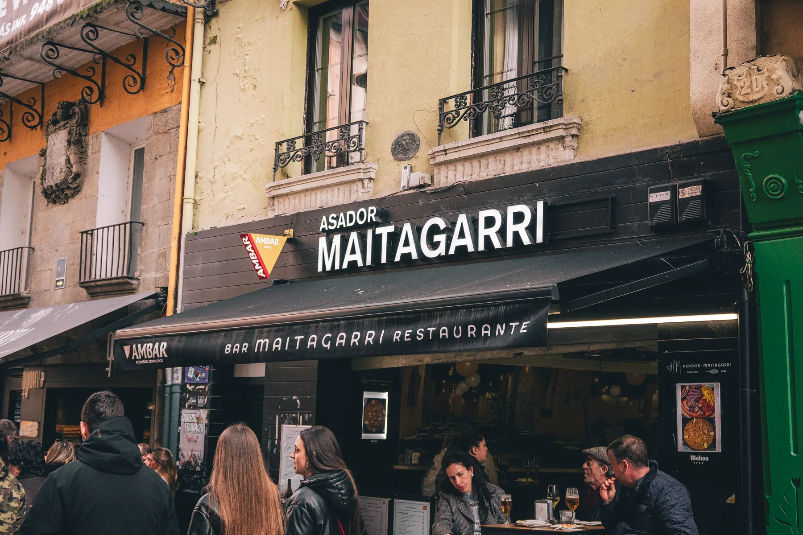

ASADOR · PAMPLONA
ASADOR · PAMPLONA
Desliza para acercarte al fuego
La brasa como punto de partida
Aquí el fuego no decora.
Transforma el producto.
Carne, cocina y barra conviven en un lugar vivo. Una experiencia contundente al principio; cercana y humana cuando te quedas.

Hay un lugar detrás del fuego
Mesas que se llenan.
Historias que se quedan.





Pamplona · Casco Viejo
Entra por la brasa.
Quédate por el ambiente.
Calle Mercaderes 16 · Pamplona. Horarios y enlaces oficiales pendientes de confirmar.
Tu próxima mesa
El fuego ya está
encendido.
El canal oficial de reserva está pendiente de confirmar.
Reserva próximamente